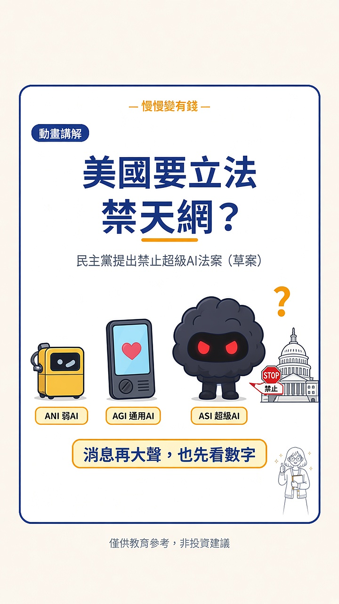

最近有標題把這則消息說成「美國要立法禁天網」。先講清楚：這是 2026 年 9 月提出的草案，不是已經通過的法律。「天網」只是電影裡用來比喻超級 AI 的說法，不是法案正式名稱。
下面用比短影片更完整的方式，把三個名詞、條文重點和立法進度分開看。先看它過了沒、禁的是哪一級。
同一份草案，先前有一篇較短的整理，可以先看為什麼這還不是法律。
AI 到底分幾級？ANI、AGI、ASI
這組三分法是常見科普架構，不是這份法案自己的分類。法案主攻的是「人工超級智能」（ASI），另外再用算力門檻定義「先進 AI」。先把名詞講清楚，比較不會把「禁止超級 AI」聽成「所有 AI 都要停」。
ANI（弱 AI／窄域 AI）：只擅長一件或一類任務。電影《瓦力》裡整天壓垃圾的機器人，就是這種感覺。現實中，會下圍棋的 AlphaGo、手機上的 Siri、網站的推薦演算法，都屬這一級：單一領域可以很強，但不會自己改做完全不同的事。AlphaGo 會下棋，並不會幫你煎蛋。
AGI（通用 AI）：要能涵蓋許多不同領域，大致接近人類那種「學會一件事，也能改學另一件事」。電影《雲端情人》的 Samantha、《機械姬》的 Ava，講的是這種想像。不少 AI 公司把 AGI 當作追求的目標，但「已經達成」或「很快就會到」都還是各方主張，沒有公認標準。本文不採用任何一家的時間表。
ASI（超級 AI）：在多數領域都明顯超過人類。電影《魔鬼終結者》的天網、《駭客任務》的母體，就是在講這個等級。這份草案想永久禁止的，是條文裡定義的 ASI，以及它列出的某些「前兆特徵」。這是立法主張，不是在說這樣的系統已經出現。
ANI 弱 AI
定義只擅長一件或一類任務
電影例子《瓦力》裡壓垃圾的機器人
現實狀態AlphaGo、Siri、推薦演算法。單一領域可以很強，不會自己改做完全不同的事
草案怎麼處理不處理
AGI 通用 AI
定義要能涵蓋許多不同領域，大致接近人類那種學會一件事、也能改學另一件事
電影例子《雲端情人》的 Samantha、《機械姬》的 Ava
現實狀態「已經達成」或「很快就會到」仍是各方主張，沒有公認標準
草案怎麼處理不處理（超過算力門檻的先進 AI 先暫停）
ASI 超級 AI
定義在多數領域都明顯超過人類
電影例子《魔鬼終結者》的天網、《駭客任務》的母體
現實狀態這是立法主張，不是說這樣的系統已經出現
草案怎麼處理永久禁止
法案實際寫了什麼
正式名稱是《禁止人工超級智能法案》（Ban Artificial Superintelligence Act of 2026）。眾院版 H.R.10538，2026 年 9 月 24 日提出，已送監督與政府改革委員會；參院版 S.5493，9 月 23 日提出，已送商業、科學與運輸委員會。截至 2026 年 11 月 22 日，公開紀錄上的最新動作仍是「已提案、送交委員會」，還沒通過任何一院，更還不是法律。
- 2026/9/23參院 S.5493 提出，已送商業、科學與運輸委員會
- 2026/9/24眾院 H.R.10538 提出，已送監督與政府改革委員會
- 2026/11/22仍在委員會
條文對 ASI 的定義，是系統已表現出、或很容易被改成具備下列任一能力：在多數領域超過人類認知表現；或有足夠能力策劃並執行毀滅、削弱人類，包括推翻或破壞聯邦政府。它也列出若干「前兆特徵」，例如大幅加速 AI 自身研發、未經授權進入系統、關不掉、自行升級，或規避監管。草案禁止研發、部署、取得、持有、資助、進口或移轉 ASI，以及具備這些前兆特徵的系統。
這跟「先進 AI 暫停」不是同一件事。草案把「先進 AI」定義成訓練算力達到或超過 10^25 次整數或浮點運算（FLOPs）的系統；新部門上路後，門檻還可依效率每年調整。法案一旦生效，這類系統要先強制暫停：原則上不得再訓練、修改或微調，尚未公開的也不能先部署，直到新監管機關人員到位並完成安全規則。之後還要取得許可（charter），上線前先審查。永久禁的是 ASI；暫停的是過算力門檻的先進 AI，不是所有弱 AI。
永久禁 ASI
對象條文定義的 ASI，以及它列出的某些前兆特徵
定義已表現出、或很容易被改成：在多數領域超過人類認知表現；或有足夠能力策劃並執行毀滅、削弱人類，包括推翻或破壞聯邦政府。前兆特徵例如大幅加速 AI 自身研發、未經授權進入系統、關不掉、自行升級，或規避監管
做法禁止研發、部署、取得、持有、資助、進口或移轉
先進 AI 暫停
對象訓練算力達到或超過 10^25 FLOPs 的系統
定義訓練算力達到或超過 10^25 次整數或浮點運算。新部門上路後，門檻還可依效率每年調整
做法生效後先強制暫停：原則上不得再訓練、修改或微調，尚未公開的也不能先部署，直到新監管機關人員到位並完成安全規則。之後還要取得許可，上線前先審查
10^25 是 1 後面 25 個 0，指訓練累計用掉的計算量，不是直接替模型打的「聰明分數」。同一個數量級也出現在歐盟《人工智慧法》（Regulation (EU) 2024/1689）第 51 條：通用 AI 模型累計訓練算力若超過 10^25 次浮點運算，會被推定具有高影響力，可能被視為具系統性風險，要承擔額外義務。兩邊數字相近，用途不同：歐盟是加強義務的推定門檻，不是暫停研發，也不是永久禁止超級 AI。
草案還要新設內閣級「人工智能部」，負責執行暫停與禁令。罰則上，魯莽違規的決策者，以及不屬於持許可機構的個人，最高可處 20 年有期徒刑；不是決策職的人員，則可能被禁止在 AI 產業任職 10 年。企業可能被撤銷許可；為安全銷毀相關系統與硬體，智慧財產與資產也可能被沒收。提案人新聞稿把企業這層稱為 corporate death penalty（公司死刑）。這些都要「通過並生效」才可能適用，現在還沒有這些法律效果。
外交與晶片方面，第 15 條把「在全球防止 ASI 發展」列為政策方向，並寫到新部門應與國務院合作，尋求國際協定與盟友協調；政策工具「可以包括」對 AI 運算基礎設施的出口管制。這是條文裡的政策主張，不是已經上路的新一輪管制。現在不宜寫成「已經開始封殺算力」。
立法程序走到哪裡
美國聯邦法律大致要走完這幾關：議員提案，送到委員會審查，再經參眾兩院通過，最後由總統簽署，才會成為法律。這份草案目前卡在委員會，也就是提案之後的第一關，後面都還沒走到。成為法律之前，還需總統簽署。時間表與最後結果，現在都還不明朗。
常見誤解
「美國已經禁止 AI 了。」沒有。到 2026 年 11 月 22 日，它仍是草案。
「所有 AI 都要停。」不是。暫停針對達到算力門檻的先進 AI；永久禁止的是條文定義的 ASI 與特定前兆特徵。Siri、推薦演算法這類弱 AI，並不因此被一律叫停。
「這是選後才提出的新法。」不是。兩院版本在 2026 年 9 月 23、24 日就已經提出。選後比較準確的說法是：既有草案又被拿出來討論，不是選後才誕生。
「歐盟都用 10^25，所以美國也會立刻暫停。」兩邊只是用了相近的算力數量級，規則目的不同；也不能用歐盟已生效的義務，推論美國這份草案已經生效。
如果只是想觀察，可以看這幾件事
這一段只整理「可以留意什麼」，不是進出場建議，也不預測股價。
第一，看法案有沒有走出委員會、有沒有任何一院表決，比看標題上的「禁止」更關鍵。第二，看「先進 AI」和 ASI 怎麼被定義：算力門檻若調整，影響範圍就會變。第三，算力門檻談的是訓練用掉多少運算，市場因此常會連帶討論晶片與運算基礎設施需求；這是觀察題，不是現在就能下的結論。草案裡的出口管制，目前也只是政策方向。
消息再大聲，也先看它過了沒、定義寫得多寬。
消息和數字為什麼要分開看，可以對照英特爾財測為何股價反而大跌。市場怎麼為 AI 公司定價，可以看ANT 是不是半個輝達。科技供應鏈的消息為什麼常牽動台股，可以看台股史上第 7 大跌點。
常見問題
Q：美國現在已經立法禁止超級 AI 了嗎？
沒有。H.R.10538、S.5493 都還在委員會，尚未成為法律。
Q：如果以後通過，現在用的聊天工具、Siri 會被關掉嗎？
就目前條文看，不能把「禁止超級 AI」理解成日常工具全部停用。實際影響要等是否通過、規則怎麼寫才能判斷。
Q：10^25 FLOPs 是不是等於已經是天網？
不是。它只是訓練算力的門檻指標。歐盟用相近數字作為系統性風險的推定門檻，那是加強義務，不是這份美國草案裡的暫停或永久禁止。
Q：公司死刑、最高 20 年，現在就會抓人嗎？
不會。那是通過並生效後才可能適用。20 年針對魯莽違規的決策者或特定個人；不是決策職的人員，條文寫的是 10 年不得在 AI 產業任職。
Q：這會不會立刻影響晶片出口？
草案只是把出口管制列為可能的政策工具，不是已上路的新管制。現在沒有足夠根據去推導某個產業或價格一定會怎樣。
消息再大聲，也先看數字。慢慢變有錢
本文整理公開法案與官方說明，不構成投資、法律或稅務建議。查證截至台北時間 2026/11/22。
來源
- 眾院 H.R.10538 法案頁與全文（Congress.gov）：法案頁、全文
- 眾院提案全文（GovInfo，Introduced in House 2026/9/24）
- 參院 S.5493 法案頁
- 提案人新聞稿（Sanders，2026/9/3，預告即將提出草案，並使用 corporate death penalty 等用語）
- 歐盟《人工智慧法》第 51 條（系統性風險與 10^25 訓練算力推定）：官方文本 Regulation (EU) 2024/1689；條文整理頁
- 歐盟執委會 FAQ（通用 AI 與系統性風險、10^25 門檻說明）
- 歐盟 AI Act Service Desk（10^25 為推定、執委會仍可另行指定）